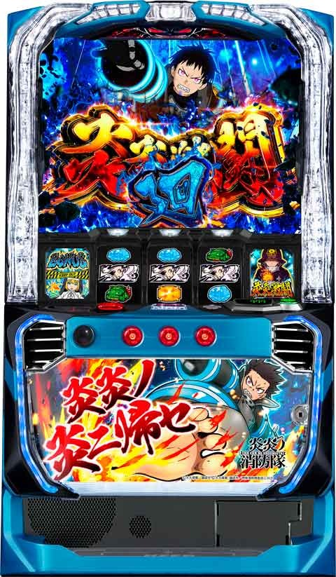

L炎炎ノ消防隊

[天井情報]
850G+α ボーナス当選
リセット時 650G+α
2500G+α 炎炎激闘当選(エピソードボーナス当選？)
※灰焔騎士団(CZ)で炎炎激闘間のハマりゲームリセットされない。
[リセット判別]
ガックンすると思われる
[有利区間について]
差枚+2000枚あたりで有利区間切れる？
有利区間切れると裏炎炎激闘のストックを1-3個獲得
エンディング経由時は裏炎炎激闘確定
狙い目
※狙い目は液晶ゲーム数で
[リセット狙い]
0スルーのみ 400Gから
88のゾーン狙い
65Gから88のゾーンまで
※前作の様に前兆有無で押し引き可能か不明。前作の様に250のゾーン強くないため0からは厳しそう？
[ボーナス間&天国天井狙い]
0スルー 620Gから
1スルー以降 580Gから
88のゾーン狙い
65Gから88のゾーン終わりまで
前回750G以降当選時
60Gから88のゾーン終わりまで
[炎炎激闘間天井狙い]
※通常2500G超えてからのボーナスがエピソードボーナスになる？
※灰焔騎士団などでデータ機と内部G数がズレるため、実際は2600-2700G以降の初当たりでエピボとなる？
※炎炎激闘入る時はエピボ経由のため、エピボの履歴が無ければ狙えそう。
88ゾーン抜け後 2450Gから
ボーナス間200G以上 2300Gから
[モードB &C狙い]
88で前兆非発生の場合はモードC確定？
モードC確定 250Gから
モードB確定 450Gから
[有利区間切れ狙い]
差枚+1500枚以上 88のゾーンまで
※差枚+2000枚超えると既に有利切れてる可能性が高い
[終了画面狙い]
ワンワンニャインは天国確認。
帽子は前作だと天国強めなので天国確認しても良さそう？
こちらも前作同様なら炎炎激闘で連チャンした場合は最後のボーナスの終了画面が示唆になる。
スマスロ-炎炎ノ消防隊
[有利区間切れ狙い]
不明
やめ時
ボーナス後、伝道者の影ステージ終了後やめ？
初当たりBIG後は伝道者の影が50G+αと前作と変わるため注意
炎炎激闘後はストック無しを確認してやめ？30G+αフォロー
その他
終了画面
{kind=link}
モード
{kind=link}
前兆示唆
{kind=link}
{kind=link}
参考元
基本情報
- メーカー: SANKYO
- 機械割: 97.7% 〜 114.9%
- 導入開始日: 2024年05月07日（火）
- ゲーム性概要: おおまかなゲーム性は前作の『パチスロ炎炎ノ消防隊』と共通で、ゲーム数消化や十字目変換などで初当りボーナスを抽選。ボーナス後の「伝導者の影」でエピソードボーナスを射止めて炎炎ループへ突入を目指そう。通常時のみ突入する可能性のある「灰焔騎士団」成功時は、エピソードボーナス直撃の可能性もある。 炎炎ループは15Gの炎炎激闘とボーナスをループさせる流れは同じだが、紅丸炎舞がボーナス確定になっていたり、炎炎激闘ストックに期待できるエピソードボーナスやジョーカーチャンスが搭載されていたりと、新要素も満載だ。


打ち方
打ち方・小役
打ち方（小役狙い）
［最初に狙う絵柄］

左リール上段付近にBARを目押し。
［BAR下段停止］ 成立役：ハズレorリプレイorベルorチャンス目or小Vベル

［角チェリー停止］ 成立役：弱チェリーor強チェリー

［スイカ上段停止］ 成立役：スイカor十字目リプレイ

［レア役・小Vベルの停止形］

今回も小Vベル停止後は十字目変換に期待！
変則押しはNG

ナビなし時は左1stでの消化を推奨。
解析情報通常時
小役関連
小役確率
| 役 | 確率 |
|---|---|
| 1枚役 | 1/5.6 |
| チャンス目 | 1/81（設定差あり） |
| 弱チェリー | 1/100 |
| スイカ | 1/100 |
| 強チェリー | 1/728（設定差あり） |
| 十字リプレイ | 1/4369（設定差あり） |
| レア役合算 | 1/29 |
| 弱レア役合算 | 1/31 |
| 強レア役合算 | 1/624 |
初当り期待度
初当り（REG・灰焔騎士団以上）期待度序列は十字目変換＜強チェリー＜十字リプレイで、十字目変換発生時の初当り期待度は約33%以上。フェイク前兆中はレア役（弱レア＜強チェリー＜十字リプレイ）で本前兆への書き換えが抽選される。各種前兆中に十字目変換は発生しない。
十字目変換抽選値
| 項目 | 抽選値 |
|---|---|
| 平均確率 | 約1/89 |
| 平均初当り期待度 | 約33% |
初当り当選率
十字目変換契機の当選はほぼ灰焔騎士団（ボーナス抽選→灰焔騎士団の順に抽選）、高設定ほどボーナスに当選しやすい。強チェリー契機はボーナス濃厚でほぼREGだが、炎炎ボーナスやエピソードボーナスにも期待できる。
また、フェイク前兆中は全設定共通で、レア役で本前兆（初当り）への書き換えを抽選する。
十字目変換時の灰焔騎士団当選率
| 設定 | 当選率 |
|---|---|
| 全設定共通 | 約31% |
※ボーナス非当選時に抽選
フェイク前兆中の本前兆書き換え当選率
| 役 | 十字目変換 |
|---|---|
| 十字目変換 | 約1% |
| 強チェリー | 約50% |
| 十字リプレイ | 約79% |
モード
十字目変換モード概要
［システム解説］ 十字目変換モードのシステムは前作とほぼ同じで、通常・点灯準備・変換高確の3種類があり、スイカ・弱チェリー・チャンス目、1枚役の3連続以上成立時（1枚役成立から平均5G以内に再度1枚役を引ければ連続扱い）、ゲーム数消化時に抽選。 変換高確は内部的に2種類あり、平均ゲーム数は 約5G〜11G 、基本的に1枚役時の 約50% で十字目変換が発生。変換高確移行時の 約10% で移行する“1枚役成立で必ず十字目変換が発生”する高確（おもに十字アイコンが赤点灯）もある。
「規定ゲーム数の解説」 1枚役が連続扱いとなる規定ゲーム数は 平均5G 。点灯準備に行った場合、この規定ゲーム数以内にレア役を引けば必ず変換高確へ移行する。また、1枚役の連続中にレア役を引いた場合、まず下記表の通りにレア役ごとに点灯準備・変換高確への移行を抽選。漏れた場合は内部的に1枚役と同じ扱いとなるため、1枚役の連続が継続する（連続カウントしたうえでレア役後から規定ゲーム数再セット）。
十字目変換モード移行率
| 役 | 点灯準備へ | 変換高確へ |
|---|---|---|
| スイカ・弱チェリー | 約39% | 約36% |
| チャンス目 | 約99% | 約1% |
| 1枚役を規定ゲーム数以内に 3連続以上 | 約74% | 約26% |
※1枚役の規定ゲーム数は平均5G
［設定変更＆有利区間移行時］ 変換高確ゲーム数分布
| ゲーム数 | 朝イチA | 朝イチB | 朝イチC | 天国 |
|---|---|---|---|---|
| 0G | 5～15G | 5～15G | 5～15G | 5～15G |
| 88G | 2～7G | 2～7G | 2～7G | 天井 |
| 100G | 3～7G | 3～7G | 2～7G | － |
| 150G | 5～15G | 5～15G | 5～15G | － |
| 200G | 2～7G | 2～7G | 2～7G | － |
| 250G | 3～7G | 3～7G | 3～7G | － |
| 300G | 2～7G | 7～15G | 7～15G | － |
| 350G | 5～15G | 5～15G | 5～15G | － |
| 400G | 7～15G | 7～15G | 2～7G | － |
| 450G | 3～7G | 3～7G | 天井 | － |
| 500G | 7～15G | 2～7G | － | － |
| 550G | 5～15G | 天井 | － | － |
| 600G | 2～7G | － | － | － |
| 650G | 天井 | － | － | － |
［ボーナス終了後］ 変換高確ゲーム数分布
| ゲーム数 | 通常A | 通常B | 通常C | 天国 |
|---|---|---|---|---|
| 88G | 2～7G | 2～7G | 2～7G | 天井 |
| 100G | 3～7G | 3～7G | 2～7G | － |
| 150G | 5～15G | 5～15G | 5～15G | － |
| 200G | 2～7G | 7～15G | 2～7G | － |
| 250G | 3～7G | 3～7G | 3～7G | － |
| 300G | 7～15G | 2～7G | 7～15G | － |
| 350G | 5～15G | 5～15G | 5～15G | － |
| 400G | 7～15G | 7～15G | 2～7G | － |
| 450G | 3～7G | 3～7G | 天井 | － |
| 500G | 2～7G | 7～15G | － | － |
| 550G | 5～15G | 5～15G | － | － |
| 600G | 7～15G | 2～7G | － | － |
| 650G | 3～7G | 天井 | － | － |
| 700G | 7～15G | |||
| 750G | 5～15G | |||
| 800G | 2～7G | |||
| 850G | 天井 |
※初当りボーナス後は伝導者の影へ移行するため0Gからの抽選はない
1枚役とレア役時は変換高確のゲーム数が減算されない。
十字アイコンによる状態示唆はコチラ
ゲーム数テーブル＆モード
［設定変更＆有利区間移行時］ ゲーム数テーブル
| ゲーム数 | 朝イチA | 朝イチB | 朝イチC | 天国 |
|---|---|---|---|---|
| 88G | 前兆!? | 前兆!? | － | 天井 |
| 100or150G | － | － | 前兆!? | － |
| 250G | － | 前兆!? | － | － |
| 350G | 前兆!? | － | － | － |
| 450G | － | － | 天井 | － |
| 550G | － | 天井 | － | － |
| 650G | 天井 | － | － | － |
［ボーナス後］ ゲーム数テーブル
| ゲーム数 | 通常A | 通常B | 通常C | 天国 |
|---|---|---|---|---|
| 88G | 前兆!? | 前兆!? | － | 天井 |
| 100or150G | － | － | 前兆!? | － |
| 250G | 前兆!? | － | － | － |
| 350G | － | 前兆!? | － | － |
| 450G | － | － | 天井 | － |
| 550G | 前兆!? | － | － | － |
| 650G | － | 天井 | － | － |
| 750G | － | － | － | － |
| 850G | 天井 | － | － | － |
［設定変更後］テーブル振り分け
| 設定 | 朝イチA | 朝イチB | 朝イチC | 天国 |
|---|---|---|---|---|
| 1 | 約53% | 約1% | 約11% | 約35% |
| 2 | 約53% | 約1% | 約11% | 約35% |
| 4 | 約53% | 約1% | 約11% | 約35% |
| 5 | 約52% | 約1% | 約11% | 約36% |
| 6 | 約52% | 約1% | 約11% | 約36% |
［ボーナス終了後］テーブル振り分け
| 設定 | 通常A | 通常B | 通常C | 天国 |
|---|---|---|---|---|
| 1 | 約64% | 約6% | 約6% | 約24% |
| 2 | 約63% | 約6% | 約6% | 約25% |
| 4 | 約63% | 約6% | 約6% | 約25% |
| 5 | 約63% | 約6% | 約6% | 約25% |
| 6 | 約63% | 約6% | 約6% | 約26% |
［有利区間リセット後］テーブル振り分け
| 設定 | 通常A | 通常B | 通常C | 天国 |
|---|---|---|---|---|
| 1 | 約19% | 約15% | 約44% | 約22% |
| 2 | 約19% | 約15% | 約44% | 約22% |
| 4 | 約19% | 約15% | 約43% | 約23% |
| 5 | 約19% | 約15% | 約43% | 約23% |
| 6 | 約19% | 約15% | 約43% | 約23% |
テーブルの選択率は設定6の天国が若干多いくらいで設定差はほぼない。
演出動画
ロングフリーズ
アドラバースト直行のプレミアム演出。大量出玉獲得はもう目前!!
解析情報ボーナス時
灰焔騎士団（初当り炎炎激闘）
灰焔騎士団概要

初当りとして突入する炎炎激闘で、ニュアンス的にCZ的存在。15G間、高確率でボーナスを抽選する。 また、灰焔騎士団中は通常の初当りボーナスより炎炎ボーナスやエピソードボーナスに当選しやすい。1枚役からの十字目変換非発生（バトル非発生）時は、次の1枚役期待度がアップするのもポイントだ。
灰焔騎士団 性能
| 項目 | 示唆 |
|---|---|
| 突入契機 | 初当りの一部 |
| 継続ゲーム数 | 15G＋α |
| ボーナス期待度 | 約50% |
| 成功時の恩恵 | 初当りボーナス |
| 小役ごとの ボーナス期待度 | 弱レア役＜十字目変換＜強チェリー＜十字リプレイ |
| 小役ごとの 書き換え期待度 | その他小役＜1枚役＜弱レア役＜強チェリー＜十字リプレイ |
| その他 | 15G間で1枚役orレア役非成立時は15Gを再セット |
［灰焔騎士団］レア役のボーナス当選率
| 役 | 当選率 |
|---|---|
| 弱レア役 | 約12% |
| 強チェリー | 約85% |
| 十字リプレイ | 約95% |
［灰焔騎士団］1枚役のバトル当選率
| スルー回数 | バトル当選率 |
|---|---|
| 0回（1回目） | 約59% |
| 1スルー | 約92% |
| 2スルー | 100% |
［灰焔騎士団］バトルの抽選値
| 項目 | バトル当選率 |
|---|---|
| トータル移行確率 | 約1/8 |
| バトル勝率（ボーナス当選率） | 約28% |
［灰焔騎士団］バトルの対戦相手別DATA
| 対戦相手 | 選択率 | 勝利期待度 |
|---|---|---|
| フレイル | 約9% | 約87% |
| アロー | 約20% | 約37% |
| アサルト | 約29% | 約21% |
| ジョヴァンニ | 約42% | 約16% |
1枚役でバトルに当選した場合、十字目変換が発生してバトルへ発展する。
［フレイル登場で大チャンス］

アイリスチャンス抽選
アイリスチャンスは弱チェリーor強チェリーでボーナス非当選だった場合に抽選。 強チェリーはボーナスに当選しなくても約1/2でアイリスチャンスに当選 する。炎炎激闘中と同じくハズレ・ベル以外の小役を引けばボーナス濃厚、トータル期待度は 約70% だ。
［灰焔騎士団］アイリスチャンス当選率
| 役 | ボーナス非当選時の当選率 | 実質的な当選率 |
|---|---|---|
| 弱レア役 | 約4% | 約4% |
| 強チェリー | 約50% | 約7% |
［灰焔騎士団］ボーナス当選時の種別割合
| ボーナス | 割合 |
|---|---|
| 炎炎ボーナス | 約6% |
| REG | 約93% |
| エピソードボーナス | 約1% |
レア役時の当選やバトル勝利、アイリスチャンス成功時のボーナス割合は上記の通り。通常時のボーナス当選より炎炎ボーナス以上の割合が高くなっている。
初当りボーナス（炎炎・REG）
初当りボーナス概要
初当りボーナス後に突入する伝導者の影（高確ステージ）でエピソードボーナスを引き当て、炎炎激闘を目指すというゲーム性はこれまでと同じ。炎炎ボーナスはREGよりも終了後の高確ゲーム数が長いため、炎炎激闘へ突入しやすい。
初当りボーナス性能（エピソード除く）
| 項目 | 炎炎ボーナス | REG |
|---|---|---|
| 1Gあたりの純増 | 約5.7枚 | |
| 継続ゲーム数 | 40G | ベルナビ10回 |
| 平均獲得枚数 | 230枚 | 85枚 |
| 消化中の抽選 | 炎炎激闘ストック、エピソードボーナス | |
| 終了後の「伝導者の影」 ゲーム数 | 約60G＋α | 約30G＋α |
| 小役ごとの期待度 | 弱レア役＜強チェリー＜十字目リプレイ |
［炎炎ボーナス］

［REG］

初当りボーナス中のエピソードボーナス当選率
| 役 | 炎炎ボーナス中 | REG中 |
|---|---|---|
| 弱レア役 | 約1% | 約1% |
| 強チェリー | 約14% | 約12% |
| 十字リプレイ | 約39% | 約39% |
初当りボーナス経由のエピソードボーナス当選期待度
上記表はボーナス中の白7揃いと伝導者の影中の当選を含んだトータル当選率になる。
伝導者の影
伝導者の影概要

初当りボーナス後に突入するエピソードボーナスの高確率状態。最低でも30G以上継続する。
エピソードボーナス抽選
基本的に十字目変換がエピソードボーナスのメインになるのは前作と同じだが、ゲーム性的には前兆（は第8特殊消防隊緊急出動）に入れて、 前兆中の書き換えで当選させる流れがメイン となる。
［伝導者の影］十字目変換確率＆発生率
| 項目 | 抽選値 |
|---|---|
| 平均確率 | 約1/14 |
| 1枚役成立時の発生率 | 約40% |
※前兆中は1枚役で十字目変換を抽選しないが勝利抽選をおこなう
［伝導者の影］フェイク前兆中のボーナス当選率
| 役 | 当選率 |
|---|---|
| 弱レア役 | 約1% |
| 強チェリー | 100% |
| 十字リプレイ | 100% |
※前兆中は十字目変換が発生しない
エピソードボーナス（初当り）
エピソードボーナス概要
［炎炎激闘濃厚］ 炎炎激闘突入かつ、複数ストック濃厚となるボーナス。当選時は炎炎激闘を2個以上ストック、消化中は弱レア＜強チェリー＜十字リプレイで炎炎激闘ストックを抽選する。
［炎炎激闘ストック抽選タイミング］ エピソードボーナス当選時の炎炎激闘ストック個数はエピソードボーナスが告知（白7揃いor炎炎激闘ロゴ出現時など）された次のゲームのレバーONで抽選される。
初当りエピソードボーナス性能
| 項目 | 内容 |
|---|---|
| 1Gあたりの純増 | 約5.7枚 |
| 継続ゲーム数 | ベルナビ10回 |
| 平均獲得枚数 | 85枚 |
| 消化中の抽選 | 炎炎激闘、ボーナス、森羅万象 |
| 備考 | エピソードの種類で 炎炎激闘のストック数を示唆 |
エピソードごとの炎炎激闘ストック数示唆
| エピソード | ストック数示唆 |
|---|---|
| 消防官の戦い | 少 |
| 灰焔騎士団 | ↓ |
| 第8特殊消防隊 | ↓ |
| 地下（ネザー） | 多 |
灰焔騎士団、第8特殊消防隊、地下（ネザー）は開始タイトルがいずれも「地下への」なので、消化中の画面で判別しよう。
［消防官の戦い］

［灰焔騎士団］

［第8特殊消防隊］

［地下（ネザー）］

炎炎激闘ストック当選率
| 役 | 当選率 |
|---|---|
| 弱レア役 | 約10% |
| 強チェリー | 約71% |
| 十字リプレイ | 約84% |
炎炎激闘ストック獲得時の個数振り分け
| ストック個数 | 振り分け |
|---|---|
| 1個 | 約73% |
| 2個 | 約20% |
| 3個 | 約8% |
炎炎激闘
炎炎激闘概要

15G＋αのSTで、滞在中は階層が進むほどボーナス期待度がアップ。1枚役からの十字目変換非発生（バトル非発生）時は、次の1枚役期待度がアップする。
「特殊ステージ抽選」 炎炎激闘突入時と伝導者バトル敗北時に特殊ステージ移行を抽選。いわゆるバトル敗北の天井的な要素で、当選時は特殊ステージに移行して1枚役orレア役を引けばボーナス濃厚となる。
炎炎激闘 性能
| 項目 | 内容 |
|---|---|
| 継続ゲーム数 | 15G＋α |
| ボーナス当選期待度 | 約61% |
| バトル発展確率 | 1/8.1 |
| 消化中の抽選 | バトル、炎炎激闘、アイリスチャンス |
| 小役ごとの期待度 | 弱レア役＜十字目変換＜強チェリー＜十字リプレイ |
| その他 | 15G間で1枚役orレア役非成立時は15Gを再セット |
［第1階層］

［第2階層］

［最深部］

［特殊ステージ］

［アイリスチャンス］

今回も3G以内にハズレ・ベル以外を引けばボーナス！
潜伏中の抽選
炎炎激闘終了後、内部的に炎炎激闘のストックがある場合（潜伏中）、 炎炎激闘突入までの間は炎炎激闘のモードアップを抽選 。もちろんストックがなかった場合（非潜伏中）は通常時と同じ抽選がおこなわれる。 告知までの平均ゲーム数は約8〜10G前後だ（前作の炎炎は平均12G）。
潜伏中のECモード当選率
| 移行先ECモード | 弱レア役 | 強チェリー | 十字リプレイ |
|---|---|---|---|
| モード1 | 約49% | 約1% | － |
| モード2 | 約50% | 約1% | － |
| モード3 | 約1% | 約98% | 100% |
ボーナス＆バトル当選率
レア役時のボーナス当選率や1枚役時のバトル発展率は灰焔騎士団と同じだが、炎炎激闘中のほうがバトル勝利期待度が高くなっている。
［炎炎激闘］バトルの抽選値
| 項目 | バトル当選率 |
|---|---|
| トータル移行確率 | 約1/8 |
| バトル勝率（ボーナス当選率） | 約37％ |
［炎炎激闘］バトルの対戦相手別DATA
| 対戦相手 | 選択率 | 勝利期待度 |
|---|---|---|
| ジョヴァンニ | 約41% | 約21% |
| アサルト | 約26% | 約22% |
| アロー | 約22% | 約45% |
| フレイル | 約11% | 約90% |
［炎炎激闘］バトル中の勝利書き換え当選率
| 役 | 当選率 |
|---|---|
| 下記以外 | 約1% |
| 1枚役 | 約5% |
| 弱レア役 | 約17% |
| 強チェリー | 約75% |
| 十字リプレイ | 約95% |
アイリスチャンス抽選
アイリスチャンスの抽選値は灰焔騎士団と同じで、弱チェリーor強チェリーでボーナス非当選だった場合に発生を抽選。アイリスチャンス中は、ハズレ・ベル以外の小役を引けばボーナス濃厚で、トータル期待度は 約70% になる。
ECモード（ステージ）選択比率
移行ステージでボーナス期待度が変化するECモードを示唆していて、 第2階層 ならECモード2以上、 最深部 はECモード3濃厚。 特殊ステージ はECモード不問で、炎炎激闘突入時とバトル敗北後に抽選される。 ちなみに、特殊ステージは基本的にボーナス濃厚だが、バトル敗北経由のみスルーする可能性がある。この場合は特殊ステージの状態がストックしている炎炎激闘に引き継がれる。
ECモード（ステージ）選択率&ボーナス期待度
| ECモード | 選択率 | ボーナス期待度 |
|---|---|---|
| モード1 | 約61% | 約49% |
| モード2 | 約29% | 約75% |
| モード3 | 約10% | 約92% |
ステージごとのECモード分布
| ECモード | 第1階層 | 第2階層 | 最深部 |
|---|---|---|---|
| モード1 | 約68% | － | － |
| モード2 | 約26% | 約84% | － |
| モード3 | 約6% | 約16% | 100% |
特殊ステージ移行率
| 契機 | 移行率 |
|---|---|
| 炎炎激闘突入時 | 約1% |
| バトル敗北時 | 約3% |
裏炎炎激闘
エンディング到達後や炎炎激闘廻シンラver終了後は、内部的に裏炎炎激闘に移行。平均ストックは1〜3個で、見た目での判別はできないが、炎炎激闘廻シンラver移行のチャンスとなる。
裏炎炎激闘でのボーナス当選期待度は平均72.3%だ。
炎炎激闘廻
炎炎激闘廻概要
ボーナス期待度の高い上位モードで、ショウverは大量ストック保持の期待大、シンラver滞在中のボーナスは炎炎激闘廻に再突入する大チャンス。さらに、シンラver終了後（ループに漏れた場合）は、ボーナスを引けば炎炎激闘廻シンラverに復帰する 「裏炎炎激闘」に約9割で突入 する（裏は見た目上での判別は不可）。
シンラverは平均3〜4セット継続（期待ボーナス回数2〜3回） 、炎炎激闘ストックがなくなると裏炎炎激闘へ移行する。
炎炎激闘廻 性能
| 項目 | シンラ | ショウ |
|---|---|---|
| 当選契機 | 炎炎激闘ループ中の一部 | 炎炎激闘初当り時の一部 |
| 継続ゲーム数 | 15G＋α | |
| 特徴 | 次回ボーナス濃厚 ＋ループ性あり | 炎炎激闘 大量ストック保持 |
| 消化中の抽選 | バトル、炎炎激闘、アイリスチャンス |
［炎炎激闘廻シンラver］

［炎炎激闘廻ショウver］

紅丸炎舞
紅丸炎舞概要

今回はボーナス当選まで継続する無限STにパワーアップしている。
紅丸炎舞 性能
| 項目 | 性能 |
|---|---|
| 当選契機 | 炎炎激闘中ボーナスの抽選 |
| 継続ゲーム数 | ボーナス当選まで |
| ボーナス当選期待度 | 100% |
| 備考 | 炎炎激闘終了後に突入することもある |
ボーナス＆バトル当選率
レア役時のボーナス当選率や1枚役時のバトル発展率は灰焔騎士団・炎炎激闘中と同じ。ただし、 バトルの平均期待度は約64% と高くなっている。 液晶上、アイリスチャンスは発生しないが、バトルの一部で内部的にアイリスチャンス中と同じ抽選（ハズレ・ベル以外の小役を引けばボーナス）がおこなわれている。
［紅丸炎舞］バトルの抽選値
| 項目 | バトル当選率 |
|---|---|
| トータル移行確率 | 約1/8 |
| バトル勝率（ボーナス当選率） | 約64％ |
［紅丸炎舞］バトルの対戦相手別勝利期待度
| 対戦相手 | 勝利期待度 |
|---|---|
| ジョヴァンニ | 約51% |
| アサルト | 出現しない |
| アロー | 約73% |
| フレイル | 約96% |
［紅丸炎舞］バトル中の勝利書き換え当選率
※書き換えの当選率は炎炎激闘と同じ
炎炎激闘中ボーナス（炎炎・ラッキースケベられ・アクセル）
炎炎激闘中ボーナス概要
ボーナス終了後は炎炎激闘に突入。厳密には炎炎激闘のストックがなかった場合、ボーナス終了後に炎炎激闘を1セット以上獲得する抽選がおこなわれる。ボーナス消化中は炎炎激闘やボーナスストック、森羅万象を抽選する。
炎炎激闘中のボーナス性能（エピソード除く）
| 項目 | 炎炎、ラッキースケベられ | アクセル |
|---|---|---|
| 1Gあたりの純増 | 約5.7枚 | |
| 継続ゲーム数 | 40G | ベルナビ10回 |
| 平均獲得枚数 | 230枚 | 85枚 |
| 消化中の抽選 | ボーナス1G連、森羅万象、 炎炎激闘ストック、エピソードボーナス |
［炎炎激闘］ボーナス中の抽選
| 抽選 | 抽選序列 |
|---|---|
| 1G連ストック | 強チェリー＜十字リプレイ |
| 炎炎激闘ストック （1～3個） | 弱レア役＜強チェリー＜十字リプレイ |
| 森羅万象 | 1枚役＆レア役3連＜1枚役＆レア役4連以上 （4連以上しても抽選値は同一） |
1契機につき上記3つのいずれかを抽選する。
［炎炎ボーナス］

［ラッキースケベられボーナス］

炎炎激闘のストックを複数所持している時に発生しやすい。消化中に当選した1G連や森羅万象は基本的に前兆非経由の完全告知で報知される。
［アクセルボーナス］

炎炎／ラッキースケベられボーナス中の各種当選率
| 役 | 1G連ストック | 炎炎激闘ストック | 森羅万象 |
|---|---|---|---|
| 弱レア役 | － | 約2% | － |
| 強チェリー | 約14% | 約37% | － |
| 十字リプレイ | 約33% | 約43% | － |
| 1枚役3連 | － | － | 約1% |
| 1枚役4連以降 | － | － | 約7% |
※1枚役の連続はレア役を挟んだ場合も回数が加算 ※上記当選は同時抽選ではなく、契機役に応じていずれか1つを抽選
アクセルボーナス中の各種当選率
| 役 | 1G連ストック | 炎炎激闘ストック | 森羅万象 |
|---|---|---|---|
| 弱レア役 | － | 15.7% | － |
| 強チェリー | 11.8% | 43.3% | － |
| 十字リプレイ | 39.4% | 60.6% | － |
| 1枚役3連 | － | － | 0.4% |
| 1枚役4連以降 | － | － | 2.0% |
※1枚役の連続はレア役を挟んだ場合も回数が加算 ※上記当選は同時抽選ではなく、契機役に応じていずれか1つを抽選
アクセルボーナス中に炎炎激闘をストックした場合、約55%で紅丸炎舞になる（内部的な紅丸炎舞の場合もあり）。
炎炎激闘ストック時の個数振り分け
| ストック | 振り分け |
|---|---|
| 1個 | 約73% |
| 2個 | 約20% |
| 3個 | 約8% |
炎炎激闘中のエピソードボーナス
炎炎激闘中のエピソードボーナス概要
エピソードボーナス発生時は炎炎激闘の複数ストックに期待できる（当選時に炎炎激闘ストックを 1〜9個 獲得）。消化中はほかのボーナスと同じく、炎炎激闘やボーナスストック、森羅万象を抽選。森羅万象突入濃厚となる「シンラ」エピソードも搭載されている。 シンラ以外のキャラ別性能は共通。紅丸エピソードはは紅丸炎舞中のエピソードボーナス当選時に発生する。
炎炎激闘中のエピソードボーナス性能
| 項目 | 内容 |
|---|---|
| 1Gあたりの純増 | 約5.7枚 |
| 継続ゲーム数 | ベルナビ10回 |
| 平均獲得枚数 | 85枚 |
| 消化中の抽選 | 炎炎激闘、ボーナス、森羅万象 |
| 小役ごとの期待度 | 弱レア役＜強チェリー＜十字リプレイ |
| 備考 | 当選時の一部でジョーカーチャンスへ、 シンラエピソードは森羅万象濃厚 |
［アーサー］

［タマキ］

［火縄］

［マキ］

［紅丸］

［シンラ］

白7揃い時のボーナス種別分布（合算値）
| 種別 | 分布 |
|---|---|
| シンラ以外のエピソードボーナス | 約53% |
| シンラのエピソードボーナス | 約13% |
| ジョーカーチャンス | 約34% |
炎炎激闘中・EPB中の炎炎激闘ストック当選率
※EPB…エピソードボーナス
ジョーカーチャンス
ジョーカーチャンス概要

白7揃いから突入するエピソードボーナスの一種だが、このボーナス中は特化ゾーンとなっていて、高確率かつ全役で炎炎激闘のストックを抽選。レア役を引けば炎炎激闘orボーナスストック濃厚となる。
ジョーカーチャンス性能
| 項目 | 内容 |
|---|---|
| 1Gあたりの純増 | 約5.7枚 |
| 継続ゲーム数 | ベルナビ10回 |
| 平均獲得枚数 | 85枚 |
| 炎炎激闘平均ストック | 約4個 |
| 消化中の抽選 | 高確率で炎炎激闘、ボーナスを抽選 |
ジョーカーチャンス中の各種当選率
| 役 | 1G連ストック | 炎炎激闘ストック |
|---|---|---|
| 下記以外 | － | 約8% |
| 弱レア役 | － | 100% |
| 強チェリー | 約21% | 約79% |
| 十字リプレイ | 約29% | 約71% |
※1枚役の連続はレア役を挟んだ場合も回数が加算 ※上記当選は同時抽選ではなく、契機役に応じていずれか1つを抽選
レア役以上ならストック濃厚！
森羅万象（廻）
森羅万象概要
アドラバーストをかけたCZで、アドラバーストへ突入すれば、アドラバースト終了後に森羅万象廻へ突入。森羅万象廻とアドラバーストをループさせるおなじみのゲーム性へ移行する。
森羅万象 性能
| 項目 | 森羅万象 | 森羅万象廻 |
|---|---|---|
| 当選契機 | 炎炎激闘中 ボーナスの一部など | アドラバースト終了後 |
| 1Gあたりの純増 | 約5.7枚 | |
| 継続ゲーム数 | 10G | 5G |
| 勝利期待度 | 約31% | 約66% |
| 消化中の抽選 | 成功でアドラバーストへ |
［森羅万象］

［森羅万象廻］

森羅万象の成功（アドラバースト）当選率
おおまかな流れは前作と同じ。開始時に成功抽選をして、もれた場合は消化中の1枚役＆レア役で書き換えを抽選。開始時の成功抽選に当選していた場合は複数ストックのチャンスとなる。開始時と消化中の書き換えを含めた合算当選率は 約31% だ。
開始時の成功当選率＆ストック振り分け
| 抽選タイミング | 当選率 |
|---|---|
| 森羅万象開始時 | 約26% |
開始時の成功抽選当選時・ストック振り分け
| アドラバーストストック | 振り分け |
|---|---|
| 1個 | 約23% |
| 2個 | 約75% |
| 3個 | 約2% |
消化中の成功書き換え当選率（ストック1個）
| 役 | 当選率 |
|---|---|
| 1枚役 | 約1% |
| 弱レア役 | 約21% |
| 強レア役 | 約79% |
| 十字リプレイ | 約79% |
森羅万象廻の成功（アドラバースト）当選率
森羅万象廻ではレア役を引けば成功濃厚（当該ゲームで告知）。トータル成功期待度は約66%になる。
森羅万象廻の引き戻し当選率
| 役 | 当選率 |
|---|---|
| レア役 | 100% |
| トータル | 約66% |
アドラバースト
アドラバースト概要

20G＋α継続して、消化中は約1/3でJAC IN。JACは10Gor20G継続するため、JAC INさせるほど出玉もどんどん増えていく。終了後は森羅万象廻へ移行する。
アドラバースト性能
| 項目 | 内容 |
|---|---|
| 当選契機 | 森羅万象（廻）成功 |
| 1Gあたりの純増 | 約5.7枚 |
| 継続ゲーム数 | 20G＋α |
| 消化中の抽選 | 毎ゲーム約1/3でJAC INを抽選 |
JACの種類
| JACの種類 | JACゲーム |
|---|---|
| 炎炎JAC（炎揃い） | 10G |
| 炎炎JACバースト（赤7揃い） | 20G |
| 炎炎JACバースト虹（赤7&炎のV字） | 20G＋アドラバーストストック |
［炎炎JAC］

［炎炎JACバースト］

JAC抽選
メインは狙えカットインからのJAC入賞。押し順経由のチャンス目や予告音経由のスイカもJAC入賞になる。
JACの種類
| JAC | JACゲーム数 |
|---|---|
| 炎炎JAC | 10G |
| 炎炎JACバースト | 20G |
| 炎炎JACバースト虹 | 20G＋アドラバーストストック×1 |
JAC当選契機別のパターン確率
| 役 | 確率 |
|---|---|
| 狙えカットインフラグ | 約1/3 |
| チャンスリプレイ（押し順ナビ経由） | 約1/79 |
| スイカ（予告音経由） | 約1/97 |
狙えカットイン経由のJAC内訳
| JAC | 確率 |
|---|---|
| 炎炎JAC（炎揃い） | 約1/9 |
| 炎炎JACバースト（赤7揃い） | 約1/5 |
| 炎炎JACバースト虹（V字停止） | 約1/2000 |
狙えカットイン時のJACは約6割が炎炎JACバーストになる。
レア役契機のJAC振り分け
| JACゲーム | スイカ | チャンスリプレイ |
|---|---|---|
| 炎炎JAC | 約98% | － |
| 炎炎JACバースト | 約2% | 100% |
［狙えカットイン］

［炎炎JACバースト虹］

［JACの種類］

JAC中のゲーム数上乗せ当選率
JAC中は強レア役を引けばアドラバーストのゲーム数を上乗せ。低確率ではあるが弱レア役でも上乗せが抽選される。
JAC中のアドラバーストゲーム数上乗せ当選率
| 上乗せ | 弱レア役 | 強チェリー | 十字リプレイ |
|---|---|---|---|
| ＋5G | 約1% | 約96% | 約96% |
| ＋10G | 約1% | 約4% | 約2% |
| ＋20G | 約1% | 約1% | 約2% |
［白7狙えカットイン］ 発生した時点でアドラバーストのゲーム数上乗せ＋10G以上濃厚。青カットインがデフォルトで、赤カットインなら＋20G濃厚となる。青カットインでも白7が斜めに揃えば＋10G以上だ。
演出情報
通常時
ステージごとの示唆
| ステージ | 示唆 |
|---|---|
| 第8地区 | デフォルト |
| ヴァルカン工房 | デフォルト |
| 浅草 | 炎炎激闘潜伏期待度アップ |
| 第1特殊消防隊大聖堂 | 前兆濃厚 |
| 炎上 | 炎炎激闘潜伏濃厚 |
［第8地区］

［ヴァルカン工房］

［浅草］

［第1特殊消防隊大聖堂］

［炎上］

十字目変換発生時のカットイン別の特徴
| パターン | 特徴 |
|---|---|
| 十字マーク | 当たった場合も基本的に灰焔騎士団、 高設定ほどボーナスに当選しやすい |
| シンラ | ボーナスの大チャンス |
| ショウ | ボーナスの大チャンス、ロングフリーズ発生で アドラバースト突入＆アドラ複数ストック濃厚 |
| アイリス | 激アツ |
| アイリス プレミア | ボーナス濃厚 |
十字目変換時のカットイン別期待度
| パターン | 灰焔騎士団当選期待度 | ボーナス当選期待度 |
|---|---|---|
| 十字アイコン | 約34% | 低め （高設定ほど優遇） |
| シンラ | － | 約40% |
| ショウ | － | 約85% |
| アイリス | － | 約95% |
| アイリスプレミア | － | 100% |
十字目変換時・裏ボタンの期待度＆展開示唆はコチラ
［十字マーク］
［シンラ］

［アイリス］

［ショウ］

［アイリス プレミア］

十字目変換モード示唆

前作と同じくエフェクトで滞在モードを示唆。画面右下の十字アイコンが白く点灯すれば変換高確濃厚となる。
十字アイコン・エフェクトごとの示唆
| パターン | 示唆 |
|---|---|
| 周囲青エフェクト | 変換準備滞在濃厚 |
| 点灯（青） | 変換高確濃厚 |
| 点灯（赤） | 変換高確の確定バージョン滞在濃厚 |
※変換高確の確定バージョンでは1枚役成立＝十字目変換濃厚
［周囲青エフェクト］

［点灯（青）］

連続演出期待度
通常時の連続演出は3G構成が基本で、4G継続で緊急出動orボーナス濃厚。次回予告発生時はどの連続演出でも確定、赤タイトルや「バーンズ〜」「試験会場から〜」はハズレても緊急出動発展で本前兆濃厚となる（赤タイトルは出た時点でほぼ確定）。また、タイトルの色変化を除き、チャンスアップは2回発生すれば激アツ、3回発生時は初当り濃厚だ。
トータル期待度
| 連続演出 | 期待度 |
|---|---|
| 第8メンバーに料理を作れ！ | 約15% |
| ゴールに辿り着け！ | 約16% |
| 新たな技を習得しろ！ | 約17% |
| バーンズから一本取れ！ | 約53% |
| 試験場から脱出しろ！ | 約60% |
タイトル色別期待度
| 連続演出 | 青 | 赤 | 炎柄 |
|---|---|---|---|
| 第8メンバーに料理を作れ！ | 約14% | 約99% | 100% |
| ゴールに辿り着け！ | 約15% | 約99% | 100% |
| 新たな技を習得しろ！ | 約16% | 約99% | 100% |
| バーンズから一本取れ！ | 約49% | 約99% | 100% |
| 試験場から脱出しろ！ | 約56% | 約99% | 100% |
チャンスアップ発生回数別期待度
| 連続演出 | 0回 | 1回 | 2回 |
|---|---|---|---|
| 第8メンバーに料理を作れ！ | 約14% | 約40% | 約87% |
| ゴールに辿り着け！ | 約15% | 約43% | 約88% |
| 新たな技を習得しろ！ | 約16% | 約45% | 約89% |
| バーンズから一本取れ！ | 約45% | 約92% | 約99% |
| 試験場から脱出しろ！ | 約51% | 約94% | 約99% |
※タイトルの色変化はチャンスアップ回数に含まない ※3回発生は確定
連続演出中の確定パターン
| 注目箇所 | パターン |
|---|---|
| アイリスランプ | 点灯時はレア役濃厚、レア役否定で本前兆濃厚 |
| 下パネル | 消灯すれば本前兆濃厚 |
［第8メンバーに料理を作れ！］

［ゴールに辿り着け！］

前兆
ボーナス前兆突入期待度
| パターン | 本前兆期待度 | |
|---|---|---|
| ゲーム数 テーブル経由 | 連続演出発生 | 70%以上 |
| ゲーム数 テーブル経由 | 伝導者の影へ | 100% |
| レア役または 十字目変換経由 | 起点から6G以内に緊急出動へ | 55%以上 |
| レア役または 十字目変換経由 | 連続演出後に即緊急出動へ | 55%以上 |
| レア役または 十字目変換経由 | 伝導者の影へ （強チェ以外） | 98%以上 |
| レア役または 十字目変換経由 | 強チェリー経由で伝導者の影へ | 100% |
十字目変換経由の灰焔騎士団前兆も連続演出後の緊急出動即発展でチャンス。基本的には連続演出後、前兆を経て緊急出動へ発展する。
緊急出動中の大チャンスパターン別の本前兆期待度
| パターン | 期待度 |
|---|---|
| 導入シーンにシンラの足跡 | 100% |
| 鎮魂演出で色が一気に2段階アップ | 95%以上 |
| 鎮魂演出で色が一気に3段階アップ | 100% |
| 突入後15G間 連続演出非発展 | 100% |
| キャラセリフの赤文字 | 約99% |
| 悪魔の足跡が巨大 | 約86% |
| 敵出現あおりでアイリス登場 | 約98% |
| 砂利演出でヒバナの目元がアップ | 約94% |
| 桜備号令演出の赤文字 | 約99% |
緊急出動中のエフェクト段階別占有率＆本前兆期待度
| 段階 | 占有率 | 期待度 |
|---|---|---|
| 初期段階 | 約1% | 約36% |
| 1段階（白） | 約32% | 約18% |
| 2段階（青） | 約37% | 約23% |
| 3段階（緑） | 約20% | 約39% |
| 4段階（赤） | 約10% | 約80% |
［鎮魂演出］

［エフェクトの4段階目は大チャンス］

鎮魂演出で赤まで行けば激アツ。ただし、本前兆の場合でも占有率は白や青のほうが高い。
［悪魔の足跡が巨大］

［砂利演出でヒバナの目元がアップ］

トータル期待度
| 連続演出 | 期待度 |
|---|---|
| 敵の包囲網を突破せよ！ | 約16% |
| 工場長夫人の”焰ビト”を鎮魂せよ！ | 約34% |
| 巨大”焰ビト”を鎮魂せよ！ | 約56% |
| 浅草大戦 | 約97% |
※浅草大戦は伝導者の影でのみ発生
タイトル色別期待度
| 連続演出 | 青 | 赤 | 炎柄 |
|---|---|---|---|
| 敵の包囲網を突破せよ！ | 約14% | 約97% | 100% |
| 工場長夫人の “焰ビト”を鎮魂せよ！ | 約24% | 約99% | 100% |
| 巨大”焰ビト”を鎮魂せよ！ | 約35% | 約99% | 100% |
| トータル | 約20% | 約98% | 100% |
※通常時の浅草大戦は伝導者の影でのみ発生かつタイトルはデフォルトのみ
チャンスアップ発生回数別期待度
| 連続演出 | 0回 | 1回 | 2回 | 3回 |
|---|---|---|---|---|
| 敵の包囲網～ | 約5% | 約70% | 約99% | 約99% |
| 工場長夫人～ | 約17% | 約44% | 約76% | 約99% |
| 巨大”焰ビト”～ | 約37% | 約70% | 約90% | 約99% |
| 浅草大戦 | 約96% | 約99% | 約99% | 100% |
※タイトルの色変化はチャンスアップ回数に含まない ※浅草大戦は伝導者の影でのみ発生
チャンスアップ別期待度
| 連続演出 | 2～3G目 | 4G目 |
|---|---|---|
| 敵の包囲網を突破せよ！ | 約95% | 約97% |
| 工場長夫人の“焰ビト”を鎮魂せよ！ | 約96% | 約98% |
| 巨大”焰ビト”を鎮魂せよ！ | 約98% | 約99% |
2〜3G目のチャンスアップはレバーON時に炎エフェクトが発生、4G目は「其ノ魂ヨ」文字が発生する。
［赤タイトル］

※伝導者の影関連の数値は通常時（前兆として突入するパターン）のモノ
伝導者バトル
伝導者バトルの演出法則
| パターン | 法則 |
|---|---|
| 1G目 敵の弱攻撃 | 敵選択画面の背後に伝導者がいれば 勝利濃厚 |
| 1G目 敵の弱攻撃 | 弱攻撃回避で期待度 約60～90% |
| 1G目 敵の弱攻撃 | 強攻撃時はシンラ乱入で 勝利濃厚 |
| 1G目 敵の弱攻撃 | BGMがSPARK-AGAINに変化で 勝利＋白7揃い濃厚 |
| 2G目 味方の攻撃 | 必殺技発生で 勝利濃厚 |
| 2G目 味方の攻撃 | 通常攻撃HITで期待度 約60～90% |
| 2G目 味方の攻撃 | 1G目の弱攻撃回避と弱攻撃HITが複合すれば 勝利濃厚 |
| 3G目 敵の強攻撃 | 回避すれば4G目移行＝ 勝利濃厚 |
| 3G目 敵の強攻撃 | 弱攻撃ならシンラが乱入して 勝利濃厚 |
| 3G目 敵の強攻撃 | 味方の通常攻撃HITで4G目移行＝ 勝利濃厚 |
| 3G目 敵の強攻撃 | 味方の必殺技発動で 勝利 （バトル開始時の勝利抽選に当選していた） |
前作を踏襲したパターンも多い。敵攻撃の強弱は法則が崩れた時点で勝利濃厚。 また、レア役から発展したバトルは対戦相手不問で勝利の期待大だ。
炎炎激闘の潜伏中
炎炎激闘潜伏濃厚パターン
| 演出 | 示唆 |
|---|---|
| シャッター演出 | 好機ロゴ出現 |
| タマキ着替え演出 | 発生した時点で潜伏濃厚 |
| リール消灯演出 | 第3消灯で十字目変換が発生しない |
| 各種演出 | ドクロマーク出現時にレア役成立 |
炎炎激闘潜伏に期待できるパターン
| 演出 | 示唆 |
|---|---|
| 各種演出 | ドクロマーク出現 |
| マッチボックス通過演出 | リプレイ・チャンス目否定 |
| アイリスボタン演出 | タライが落下 |
| 火華ルーレット演出 | レア役・1枚役否定 |
| シャワー演出 | レア役・1枚役否定 |
［ドクロマーク］

［アイリスボタン演出］

［火華ルーレット演出］

炎炎激闘終了後ステージ抽選値
| ステージ | 潜伏期態度 | 潜伏時の占有率 |
|---|---|---|
| 第8地区 | 約70% | 約39% |
| ヴァルカン工房 | 約70% | 約39% |
| 浅草 | 約90% | 約11% |
| 第1特殊消防隊大聖堂 | 約96% | 約6% |
| 炎上 | 100% | 約5% |
ボーナス終了後ステージ抽選値
| ステージ | 潜伏期態度 | 潜伏時の占有率 |
|---|---|---|
| 第8地区 | 100% | 約25% |
| ヴァルカン工房 | 100% | 約25% |
| 浅草 | 100% | 約10% |
| 第1特殊消防隊大聖堂 | 100% | 約7% |
| 炎上 | 100% | 約33% |
炎炎激闘がスルーしても、浅草や第1特殊消防隊大聖堂へ移行すればほぼ潜伏状態となる。ボーナス後は潜伏濃厚なので、ステージ系の数値は参考までにチェックしておこう。
炎炎激闘告知時の演出別占有率
| 演出 | 占有率 |
|---|---|
| 共通シャッター | 約2% |
| 第8リスト演出 | 約3% |
| ステップアップカットイン演出 | 約2% |
| ジョーカー演出 | 約6% |
| 桜備ナレーション演出 | 約6% |
| 次回予告 | 約1% |
| アマテラス演出 | 約1% |
| キャラ登場演出 | 約3% |
| アーサー妄想ダブルナビ演出 | 約3% |
| 火華ルーレット演出 | 約8% |
| マッチボックス通過演出 | 約10% |
| アイリスボタン演出 | 約14% |
| 環着替え演出 | 約14% |
| ステージ固有の色告知系演出 | 約8% |
| ステージ固有のロゴ告知系演出 | 約1% |
| ナビランプ点灯演出（全消灯） | 約29% |
特定パターンによる炎炎激闘残りストック数示唆
| パターン | 示唆 |
|---|---|
| アマテラス演出で レア役否定→告知 | 残りストック2個以上濃厚 |
| 次回予告の「炎炎激闘」 | 突入する炎炎激闘でボーナス濃厚かつ 残りストック3個以上濃厚 |
ある程度、打っていれば実感しているプレイヤーも多いと思うが、全消灯からの告知が最も多い。アマテラス演出や次回予告のように、パターン次第で残りストックを示唆するパターンもある。
［次回予告の炎炎激闘］

※炎炎激闘ループ中、内部的に非有利区間に落ちた場合は上記示唆の限りではない
伝導者の影
演出法則＆期待度
BGM変化は伝導者の影中の緊急出動でのみ発生。本前兆かつエフェクト変化時の 約5% 、「敵の包囲網を突破せよ！」発展時の 12.5% で発生。大チャンスパターンの期待度や、エフェクト変化の占有率や期待度は通常時の緊急出動中とほぼ同じ。
緊急出動中の大チャンスパターン別・本前兆期待度
| パターン | 期待度 |
|---|---|
| 導入シーンにシンラの足跡 | 100% |
| 鎮魂演出で色が一気に2段階アップ | 約97% |
| 鎮魂演出で色が一気に3段階アップ | 100% |
| 突入後5or6G目に連続演出発展 | 100% |
| BGM変化（SPARK-AGAIN） | 100% |
| キャラセリフの赤文字 | 約99% |
| 悪魔の足跡が巨大 | 約88% |
| 敵出現あおりでアイリス登場 | 約99% |
| 砂利演出でヒバナの目元がアップ | 約94% |
| 桜備号令演出の赤文字 | 約99% |
緊急出動中のエフェクト段階別占有率＆本前兆期待度
| 段階 | 占有率 | 期待度 |
|---|---|---|
| 初期段階 | 約1% | 約32% |
| 1段階（白） | 約32% | 約18% |
| 2段階（青） | 約38% | 約22% |
| 3段階（緑） | 約20% | 約38% |
| 4段階（赤） | 約9% | 約96% |
連続演出（緊急出動含む）

今回も伝導者の影の連続演出は浅草大戦。もちろん紅丸登場は激アツだ。緊急出動では通常時の緊急出動中の連続演出が発生する。
［浅草大戦］トータル期待度
| キャラ | 期待度 |
|---|---|
| シンラ＆アーサー | 約11% |
| 紅丸乱入 | 約99% |
| 紅丸 | 約97% |
炎柄のタイトルはキャラ不問でボーナス濃厚！
［浅草大戦］チャンスアップ発生回数別期待度
| キャラ | 0回 | 1回 | 2回 | 3回 |
|---|---|---|---|---|
| シンラ＆アーサー | 約3% | 約32% | 約89% | 100% |
| 紅丸 | 約94% | 約99% | 約99% | 100% |
［緊急出動中］トータル期待度
| 連続演出 | 期待度 |
|---|---|
| 敵の包囲網を突破せよ！ | 約21% |
| 工場長夫人の”焰ビト”を鎮魂せよ！ | 約41% |
| 巨大”焰ビト”を鎮魂せよ！ | 約41% |
| 浅草大戦 | 約64% |
［緊急出動中］タイトル色別期待度
| 連続演出 | 青 | 赤 | 炎柄 |
|---|---|---|---|
| 敵の包囲網を突破せよ！ | 約13% | 約97% | 100% |
| 鬼の”焰ビト”を鎮魂せよ！ | 約28% | 約99% | 100% |
| 工場長夫人の “焰ビト”を鎮魂せよ！ | 約28% | 約99% | 100% |
| 巨大”焰ビト”を鎮魂せよ！ | 約50% | 約99% | 100% |
［緊急出動中］チャンスアップ発生回数別期待度
| 連続演出 | 0回 | 1回 | 2回 | 3回 |
|---|---|---|---|---|
| 敵の包囲網～ | 約4% | 約68% | 約99% | 約99% |
| 鬼の”焰ビト”～ | 約13% | 約68% | 約97% | 約99% |
| 工場長夫人～ | 約13% | 約71% | 約98% | 約99% |
| 巨大”焰ビト”～ | 約28% | 約85% | 約99% | 約99% |
※タイトルの色変化はチャンスアップ回数に含まない
［緊急出動中］チャンスアップ別期待度
| 連続演出 | 2～3G目 | 4G目 |
|---|---|---|
| 敵の包囲網を突破せよ！ | 約95% | 約97% |
| 鬼の”焰ビト”を鎮魂せよ！ | 約97% | 約98% |
| 工場長夫人の“焰ビト”を鎮魂せよ！ | 約99% | 約99% |
| 巨大”焰ビト”を鎮魂せよ！ | 約99% | 約99% |
炎炎激闘
突入画面の示唆
今回も炎炎激闘突入画面で様々な要素を示唆。黒背景はボーナスを引けばエピソードボーナスorジョーカーチャンスで、表示されたキャラで示唆内容が変化する。 各画面の示唆は、炎炎ループ中であれば、当該の炎炎激闘を失敗しても有効。 また、紅丸・焜炉時は内部的な紅丸炎舞へ移行することもあるため、液晶上では通常の炎炎激闘になるパターンもあり。このケースでは15G＋α以内にボーナスに当選しなかった場合、紅丸炎舞へ突入する。
［1セット目］炎炎激闘突入画面の示唆
| 画面 | 示唆 |
|---|---|
| 第8特殊消防隊 | デフォルト |
| 灰焔騎士団 | 上位モード示唆 |
［2セット目以降］炎炎激闘突入画面の示唆
| 画面 | 背景色 | 示唆 |
|---|---|---|
| アイリス | 赤 | ECモード優遇 |
| アロー＆アサルト | 赤 | ECモード優遇 |
| ヒバナ | 赤 | エピソード発生期待度［中］ |
| バーンズ | 赤 | エピソード発生期待度［高］ |
| 紅丸・焜炉 | 赤 | 紅丸炎舞へ |
| 第8特殊消防隊 | 黒 | 成功でエピソードボーナス |
| ショウ＋伝導者一派 | 黒 | 成功で森羅万象 |
| ジョーカー | 黒 | 成功でジョーカーチャンス |
［1セット目・デフォルト］

［1セット目・チャンスアップ］

［アイリス］

［アロー＆アサルト］

［バーンズ］

［紅丸・焜炉］

［第8特殊消防隊］

［ショウ＋伝導者一派］

［ジョーカー］

炎炎激闘中の炎炎激闘ストック示唆
| パターン | 示唆 |
|---|---|
| 炎炎激闘突入時に ショウ画面切り裂き発生 | 残りストック10個以上濃厚 |
| レバーON時に 青線ランプ発光 | レア役からのボーナス当選かつ 残りストック3個以上濃厚 |
| 第3停止時に 青線ランプ発光 | 1枚役からボーナス濃厚のバトル発展かつ 残りストック3個以上濃厚 |
［ショウ画面切り裂き］

今回もMAXベットで炎炎激闘突入が告知されるタイミングで、ショウが画面を切り裂けば 炎炎激闘ストック10個以上 濃厚。発生時はBGMが「Torch of Liberty」に変化する。炎炎激闘廻ショウverへの移行パターンとは異なる演出なので混同しないように注意しておこう。
［青線ランプ発光］ ランプ詳細はコチラ 青線ランプ発光時は枠ランプ・筐体上部の目玉ランプが青く光りBGMが「Torch of Liberty」に変化する。
※ショウ画面切り裂きの画像は前作のもの（画面自体は共通）
ボーナス（エピソード以外）
初当り炎炎ボーナス消化中のカットイン期待度

強レア役後は、炎あおりが発生すれば白7揃いのチャンス。 レアパターンだが、弱レア役で白7カットイン高確へ移行した場合は1G連濃厚となる。
［カットイン］

カットインは青＜緑＜赤の順でチャンス。レインボーは1G連濃厚。基本的に白7カットイン高確で発生するが、それ以外でカットインが出れば大チャンスだ。
初当り炎炎ボーナス中のカットイン期待度
| カットイン | 通常状態中 | 白7カットイン高確中 |
|---|---|---|
| タマキ（青） | 約34% | 約8% |
| アーサー（緑） | 約73% | 約23% |
| シンラ（赤） | 100% | 100% |
| ショウ（虹） | 100% | 100% |
| タマキ（虹） | 100% | 100% |
アクセルボーナス終了画面のボイス

アクセルボーナスの終了画面で「アクセル全開〜」ボイスが発生すれば炎炎激闘の残りストック3個以上濃厚となる。
アクセルボーナス中の法則

アクセルボーナス中は基本的に炎炎激闘で勝利したキャラが登場（シンラ乱入時はシンラ）するが、途中で画面が割れて紅丸に切り替われば紅丸炎舞突入濃厚となる。
［紅丸切り替わり］

炎炎ボーナス中（炎炎激闘経由）のカットイン期待度

レア役などで1G連に当選していた場合は基本的に狙えカットイン経由の白7揃いで告知。 フェイク時を含め、通常は白7カットイン高確（液晶下部から炎出現）に移行して白7が揃うが、白7カットイン高確非経由で狙えカットインが発生すれば大チャンスになる。
炎炎激闘経由・炎炎ボーナス中のカットイン期待度
| カットイン | 通常状態中 | 白7カットイン高確中 |
|---|---|---|
| タマキ（青） | 約37% | 約5% |
| アーサー（緑） | 約64% | 約25% |
| シンラ（赤） | 100% | 約93% |
| ショウ（虹） | 100% | 100% |
| タマキ（虹） | 100% | 100% |
炎炎ボーナス終了画面の残りストック数示唆
炎炎激闘中に引いた炎炎ボーナスの終了画面で、炎炎激闘の残りストック数を示唆。モード＆天井示唆画面は炎炎激闘ループ中にも出現するが、ゲーム数テーブルはボーナスで再抽選されるため、あくまで通常時に戻った最後の終了画面のみが有効になる。
炎炎激闘中の炎炎ボーナス終了画面別・ストック示唆
| 画面 | 示唆 |
|---|---|
| ストック示唆A | 残りストック2個以上濃厚 |
| ストック示唆B | 残りストック3個以上濃厚 |
| ストック示唆C | 残りストック5個以上濃厚 |
ストック示唆画面は前作を参照
モード&天井示唆画面一覧
| 画面 | 示唆 |
|---|---|
| シンラ後ろ姿 | 天井650G以内 |
| ヘルメット | 天井250G以内 |
| 119（ワンワンニャイン） | 天国モード期待度約90% |
［シンラ後ろ姿］

［ヘルメット］

前作の同画面は天井450G示唆だったが、今回は天井250G示唆に変更されている。
［119］

119（ワンワンニャイン）は前作と同じく天国モード示唆だが、前作では期待度約70%、今作では90%と示唆強度が大幅にアップしている。
示唆系以外のボーナス終了画面まとめ
［初当りボーナスでのエピソード当選時］

［炎炎激闘中のボーナスで炎炎激闘ストック獲得時］

［炎炎激闘中のボーナスで森羅万象当選時］

［炎炎激闘中のボーナスで紅丸炎舞ストック時］

［アクセルボーナスで紅丸切り替え発生時］

紅丸炎舞or森羅万象or1G連濃厚！
［ラッキースケベられボーナス終了画面］

エピソードボーナス
エピソードの種類別・炎炎激闘突入画面対応表
| エピソード | 第8 | 灰焰騎士団 | 紅丸 | 廻 |
|---|---|---|---|---|
| 消防官の戦い | ◯ | ◯ | ◯ | ◯ |
| 第8特殊消防隊 | ◯ | ◯ | ◯ | ◯ |
| 地下（ネザー） | ◯ | ◯ | － | ◯ |
| 灰焰騎士団 | － | ◯ | ◯ | ◯ |
［デフォルト］

［灰焰騎士団］

ジョーカーチャンス
演出法則
ジョーカーチャンス中のボーナスや炎炎激闘ストック当選時は基本的に突告知が発生。導入演出の有無と成立役の組み合わせでストック当選率が変化する。導入演出が発生した時点でのストック当選期待度は約25%！
［突告知］

［導入演出］

導入演出の有無別法則
| 導入演出 | ナビ | 法則 |
|---|---|---|
| 発生 | － | リプレイ対応（否定で突告知） |
| なし | － | 1枚役対応（否定で突告知） |
| 発生 | 押し順 | 押し順からリプレイが揃えば突告知 |
| なし | 押し順 | 押し順ベル対応（1枚役なら突告知） |
| なし | 炎ナビ | ボーナス1G連濃厚 |
森羅万象（廻）
3G目のセリフ
| キャラ | セリフ内容 | |
|---|---|---|
| ショウ | 弱 | 貴公と俺にはなんの繋がりもない… |
| ショウ | 中 | 俺は貴公の弟などではない！ |
| ショウ | 強 | こんな貴公の思い出を見せつけて何になるんだ！ |
| シンラ | 弱 | ゆっくり話し合う気もないんだな… |
| シンラ | 中 | 俺たちは兄弟だったんだ！ |
| シンラ | 強 | 帰ろう…ショウ…！ |
3G目&4G目のセリフ組み合わせ別期待度
| 3G目のキャラと セリフの強弱 | 4G目のセリフ色 | |||
|---|---|---|---|---|
| 3G目のキャラと セリフの強弱 | 白 | 青 | 金 | |
| ショウ | 弱 | 約8% | 約16% | 100% |
| ショウ | 中 | 約14% | 約27% | 100% |
| ショウ | 強 | 約18% | 約34% | 100% |
| シンラ | 弱 | 約32% | 約51% | 100% |
| シンラ | 中 | 約37% | 約56% | 100% |
| シンラ | 強 | 約42% | 約60% | 100% |
5G目&6G目の展開組み合わせ別期待度
| 5G目のキャラ | 6G目の回想なし | 6G目の回想あり |
|---|---|---|
| ショウ先制 | 約18% | 約42% |
| シンラ先制 | 約27% | 100% |
［3G目のセリフ］

［5G目の先制攻撃キャラ］

アドラバースト
終了画面のストック示唆
アドラバーストの終了画面が赤背景ならアドラバーストのストックあり濃厚だ。
［通常背景］

［赤背景］

アドラバースト確定画面ごとのストック振り分け
| 確定画面 | 1個 | 2個以上 |
|---|---|---|
| デフォルト（BAR中段揃い） | 100% | － |
| 金（BAR右下がり揃い） | 50.0% | 50.0% |
［通常］

［金］

裏ボタン
十字目変換の期待度＆展開示唆

十字目変換の十字アイコンorシンラバージョン発生時のリールロック中、PUSHボタンを押すとアイリスランプの色で初当り期待度やその後の前兆パターンが示唆される。
アイリスランプの色別・初当り当選期待度
| 色 | 期待度 |
|---|---|
| 白 | 約33% |
| 青 | 約40% |
| 赤 | 100% |
アイリスランプの色別・前兆パターン
| 色 | パターン |
|---|---|
| 白 | デフォルト |
| 青 | 緊急出動へ移行 |
| 赤 | 伝導者の影へ移行 |
森羅万象中の勝利濃厚パターン
森羅万象中は様々なタイミングで楽曲「SPARK-AGAIN」が流れる勝利濃厚パターンが存在。基本的に裏ボタンで発生するので、発生タイミングをチェックしておこう。
裏ボタンタイミング
| タイミング | 詳細 |
|---|---|
| 開始画面 （1G目/第3停止後） | ● 成功時はボタンPUSHで楽曲変化 |
| 対峙画面 （2G目/第3停止後） | ● ボタンPUSH回数に1～8回の振り分けあり ● 成功時はBGMがストップ＆下パネルが消灯して次ゲームから楽曲変化 ● 7回目で成功すれば複数ストック濃厚 |
| レア役成立時 （2～6G目/第3停止後） | ● レア役時にボタンが一瞬光ったら裏ボタン有効 ● ボタン有効時にPUSH→成功時は楽曲変化 |
| 最終あおり （7G目/第3停止後） | ● ボタン表示時に十字キーの上を押して、PUSHボタンが飛び出せば勝利濃厚（勝利時の約12%で発生） |
［開始画面］

［対峙画面］

［最終あおり］

その他
ランプごとの役割＆示唆

基本的に前作とほぼ同じ。
ランプ演出の役割＆示唆
| パターン | 役割＆示唆 |
|---|---|
| 先走りランプ［弱］ | ● レバーON時に上部ランプが天面ランプに向かって走る。液晶演出発生を示唆する。 |
| 先走りランプ［強］ ※期待度アップ | ● レバーON時に上部ランプが天面ランプに向かって走り目玉ランプが高速点滅。 高期待度演出 が発生する。 |
| 先走りランプ［激アツ］ ※本前兆濃厚 | ● レバーON時に上部ランプが天面ランプに向かって走り目玉ランプと天裏ランプが高速点滅。発生した時点で 本前兆濃厚 。 |
| チャンスフラッシュ［弱］ | ● レバーON時にリール上ランプがゆっくり点滅。連続演出中などのレア役示唆（チャンス目以外）で、レア役を否定すれば 本前兆濃厚 。 |
| チャンスフラッシュ［強］ | ● レバーON時にリール上ランプがゆっくり点滅して下パネルが消灯する激アツパターン。連続演出中などのレア役示唆（チャンス目以外）で、レア役を否定すれば 本前兆濃厚 。 |
| 炎炎激闘ランプフラッシュ | ● 第3停止時に炎炎激闘ランプが一瞬光れば 潜伏濃厚 。炎炎激闘潜伏中にのみ発生する。 |
| 青線ランプ（レア役） | ● レバーON時（レア役成立）に筐体ランプが全消灯してから目玉ランプが青く発光。BGMが「Torch of Liberty」に変化する。 ボーナス当選＋炎炎激闘ストック3個以上濃厚 。 |
| 青線ランプ（1枚役） | ● 第3停止時（1枚役入賞）に筐体ランプが全消灯してから目玉ランプが青く発光。BGMが「Torch of Liberty」に変化する。 ボーナス濃厚のバトル発展＋炎炎激闘ストック3個以上濃厚 。 |
| 十字目変換示唆［弱］ | ● 1枚役入賞時に天裏ランプが点滅する。十字目変換発生のチャンス。 |
| 十字目変換示唆［強］ | ● 1枚役入賞時に天裏ランプが点滅＋アイリスランプが点灯。十字目変換濃厚かつ 期待度50%以上 。 |
| リールバックランプ消灯 | ● 1消灯…ハズレor押し順ベル、2消灯…リプレイ、3消灯…十字目変換発生のチャンス。3消灯で十字目変換が発生しなければ 潜伏濃厚 。 |